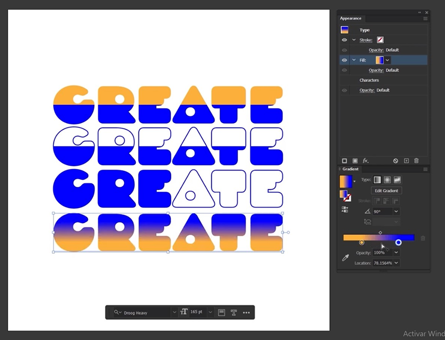
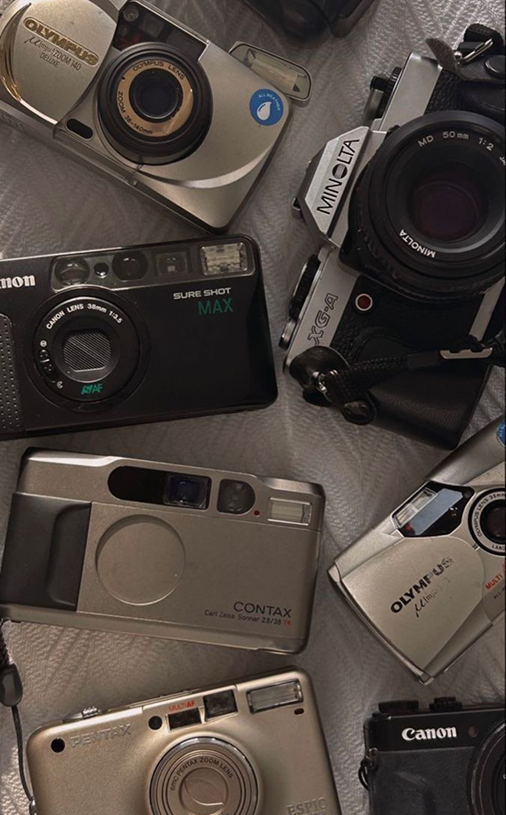
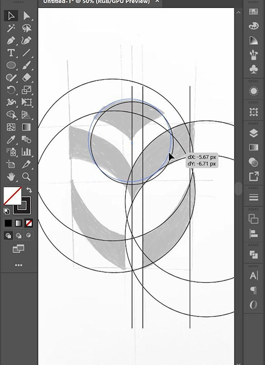
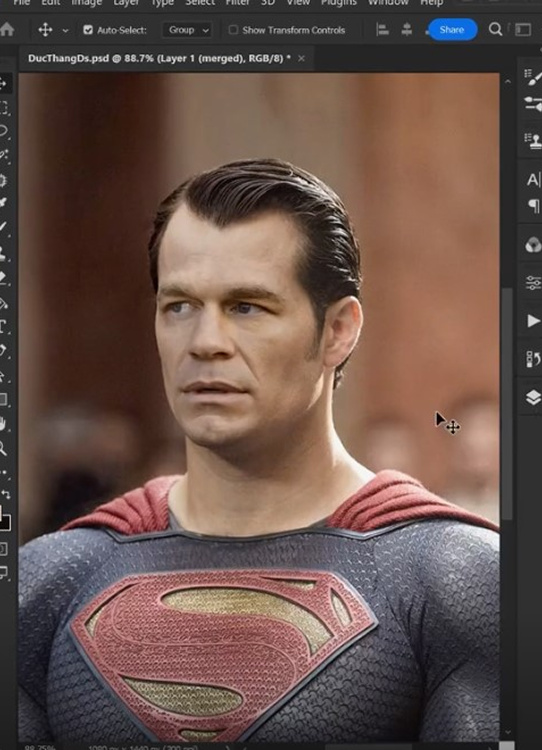
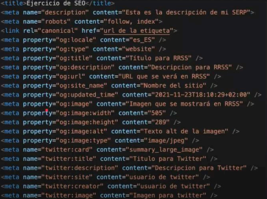

.
¡Despierta tu creatividad!
Guía esencial para dominar
el diseño gráfico y multimedia
¿Sueñas con convertirte en un maestro del diseño gráfico y multimedia?
¡Estás en el lugar correcto!
En esta serie de artículos, te acompañaré en un viaje fascinante a través de los fundamentos y técnicas más relevantes de este apasionante mundo. Aprenderás desde los primeros pasos en fotografía hasta dominar herramientas como Illustrator, Photoshop y HTML5, todo ello con un enfoque práctico y lleno de consejos profesionales.

Prepárate para crear diseños impactantes, páginas web atractivas y contenido multimedia que cautive a tu audiencia!
En este primer artículo, nos adentraremos en el maravilloso mundo de la fotografía. Capturaremos la esencia de la luz, exploraremos los diferentes tipos de cámaras y lentes y descubriremos los secretos para tomar fotos increíbles.
¡No te pierdas este contenido!
Introducción a la fotografía
“Captura la magia del mundo con tu lente.”
Imagina poder congelar momentos únicos, contar historias con una sola imagen y despertar emociones a través de la luz y el color.
¡Eso es precisamente lo que te ofrece la fotografía!
En este artículo introductorio, te guiaremos a través de los fundamentos básicos de la fotografía, desde el funcionamiento de una cámara hasta las técnicas esenciales para capturar imágenes impresionantes.

Aprenderás:
- Los principios básicos de la fotografía: Triángulo de exposición, profundidad de campo, velocidad de obturación, ISO y más.
- Tipos de cámaras y lentes: DSLR, mirrorless, cámaras compactas, objetivos zoom, gran angular y teleobjetivos.
- Composición y encuadre: Regla de los tercios, líneas de fuerza, puntos de fuga y técnicas para crear fotos equilibradas y atractivas.
- Iluminación natural y artificial: Aprovechar la luz del sol, usar flashes y otros recursos para iluminar tus fotos de manera profesional.
- Edición básica de fotos: Introducción a software como Adobe Lightroom y Photoshop para retocar y mejorar tus imágenes.
¡No te pierdas estos consejos prácticos!
Comienza con lo básico:
No te compliques con equipos costosos al principio. Enfócate en aprender los fundamentos y practica con cualquier cámara que tengas a mano.
Experimenta con diferentes perspectivas:
Agáchate, sube a un lugar alto, cambia de ángulo y captura el mundo desde diferentes puntos de vista.
Busca la luz:
La luz es esencial en la fotografía. Aprende a reconocer cómo la luz afecta a tus imágenes y utilízala a tu favor.
Edita con moderación:
Un poco de edición puede mejorar tus fotos, pero no abuses de ella. Busca un resultado natural y profesional. ✨
Diviértete y disfruta del proceso:
La fotografía es un arte, pero también debe ser una experiencia divertida. ¡Disfruta capturando el mundo a tu manera!
¡Lleva tu fotografía al siguiente nivel con estos recursos adicionales!
-Sitios web:
5 Street Photography Tips Every Photographer Should Know
Nikon education
Digital Photography School
-Canales de YouTube:
Peter McKinnon
Fstoppers
The Lavendaire Lifestyle
-Libros:
"El ojo del fotógrafo" de Michael Freeman
"Composición: La foto es bella" de Harold Evans
"Luz: La magia de la fotografía" de Michael Freeman
2. Illustrator:
“ Domina el arte vectorial y crea diseños impactantes. “
¿Sueñas con crear logotipos memorables, ilustraciones llamativas e iconos que representen tu marca a la perfección?
✨ ¡Entonces Illustrator es la herramienta ideal para ti!
Este poderoso software te permite crear gráficos vectoriales, los cuales se componen de líneas, formas y colores que pueden escalarse sin perder calidad. Esto significa que tus diseños pueden adaptarse a cualquier tamaño, desde pequeñas tarjetas de presentación hasta vallas publicitarias gigantes.
Con Illustrator, podrás:
Crear logotipos, iconos y elementos gráficos para tu marca.
Diseñar ilustraciones y personajes únicos para tus proyectos.
Desarrollar infografías, diagramas y presentaciones atractivas.
Crear patrones, texturas y fondos personalizados.
Preparar archivos para impresión y web con precisión.
Illustrator es una herramienta sumamente util tanto para ilustraciones como para vectorizar como vemos en la imagen con muchisimas herramientas.

¡No te pierdas estos consejos prácticos para comenzar con Illustrator!
Aprende los fundamentos:
Familiarízate con la interfaz del programa, las herramientas básicas y los conceptos de diseño vectorial.
Practica con formas básicas:
Comienza creando formas simples como cuadrados, círculos y triángulos para dominar las herramientas de dibujo y edición.
Explora las diferentes herramientas:
Illustrator ofrece una amplia gama de herramientas para crear líneas, curvas, degradados, efectos y más.
Experimenta con color:
Utiliza la paleta de colores, las herramientas de mezcla y las opciones de transparencia para crear combinaciones cromáticas únicas.
Organiza tu trabajo:
Aprende a utilizar capas, grupos y símbolos para mantener tus diseños organizados y editarlos de manera eficiente.
¡Lleva tus diseños vectoriales al siguiente nivel con estos recursos adicionales!
-Sitios web:
Formación Illustrator
Tutoriales de Illustrator
Cursos online de Adobe Illustrator
-Canales de YouTube:
Yoney Gallardo
Guillot Diseña Tutoriales
davidmartimar
-Libros:
"Adobe Illustrator: Manual de referencia visual" de David Blatner.
"Illustrator para diseñadores web" de Jessica Hiatt.
"Illustrator: A Complete Reference" de Todd Little.
3. Photoshop:
“ Domina el arte de la edición de imágenes y crea composiciones impresionantes. “
¿Sueñas con editar tus fotos como un profesional, crear fotomontajes
impactantes o diseñar gráficos realistas para tus proyectos?
✨ ¡Entonces Photoshop es la herramienta que necesitas!
Con Photoshop, podrás:
Editar y retocar tus fotografías: Ajustar brillo, contraste, color, eliminar imperfecciones, aplicar filtros y efectos.
Crear fotomontajes y composiciones: Combinar diferentes imágenes, crear fondos personalizados, añadir elementos gráficos y textuales.
Diseñar gráficos y elementos visuales: Crear banners, posters, flyers, tarjetas de presentación y más.
Manipular y transformar imágenes: Cambiar perspectivas, tamaños, formas y colores para lograr efectos creativos.
Preparar archivos para impresión y web: Exportar tus proyectos en diferentes formatos y con la resolución adecuada.

¡No te pierdas estos consejos prácticos para comenzar con Photoshop!
Aprende los fundamentos:
Familiarízate con la interfaz del programa, las herramientas básicas y los conceptos de edición de imágenes.
Practica con fotos sencillas:
Comienza editando y retocando fotos básicas para dominar las herramientas y técnicas de edición.
Explora las diferentes herramientas:
Photoshop ofrece una amplia gama de herramientas para recortar, seleccionar, pintar, dibujar, aplicar efectos y más.
Experimenta con filtros y efectos:
Utiliza los filtros y efectos de Photoshop para crear resultados creativos y sorprendentes.
Organiza tus capas:
Aprende a utilizar capas para trabajar de forma organizada y editar diferentes elementos de tu imagen de manera independiente.
¡Lleva tus habilidades de edición de imágenes al siguiente nivel con estos recursos adicionales!
-Sitios web:
Formación Photoshop
Ruva
Cursos online de Adobe Photoshop
-Canales de YouTube:
Photoshop Tutorials
-Libros:
"Adobe Photoshop: Manual de referencia visual" de Martin Addison.
"Photoshop para diseñadores web" de Jessica Hiatt.
"Photoshop para fotógrafos" de Scott Kelby.
4. HTML5 BÁSICO:
"Domina los fundamentos del desarrollo web y crea páginas atractivas. “
¿Sueñas con crear tu propia página web, blog o sitio web profesional?
✨ ¡Entonces HTML5 es el lenguaje que necesitas aprender!
Con HTML5, podrás:
Estructurar el contenido de tu página web: Definir secciones, encabezados, párrafos, listas, imágenes, vídeos y otros elementos.
Crear enlaces entre páginas: Vincular diferentes secciones de tu sitio web o redirigir a otras páginas externas.
Insertar formularios para recopilar información: Crear formularios de contacto, encuestas, registros y más.
Incorporar contenido multimedia: Añadir imágenes, vídeos, audio y otros elementos multimedia a tu sitio web.
Adaptar tu sitio web a diferentes dispositivos: Crear diseños responsivos que se ajusten a computadoras, smartphones y tablets.
En la imagen vemos un ejemplo de de etiquetas semánticas en html.

¡No te pierdas estos consejos prácticos para comenzar con HTML5!
Aprende los fundamentos:
Familiarízate con la sintaxis básica de HTML5, las etiquetas más comunes y la estructura de una página web.
Comienza con proyectos sencillos:
Practica creando páginas web básicas con HTML5 para dominar la estructura y los elementos.
Utiliza un editor de código:
Existen editores de código gratuitos como Notepad++ o Sublime Text que te facilitan la escritura y edición de código HTML5.
Experimenta con diferentes etiquetas:
Explora las diversas etiquetas de HTML5 para crear diferentes elementos y funcionalidades en tu sitio web.
Prueba tus páginas web en diferentes navegadores:
Es importante verificar que tu código HTML5 funcione correctamente en diferentes navegadores como Chrome, Firefox y Safari.
¡Lleva tus habilidades de desarrollo web al siguiente nivel con estos recursos adicionales!
-Sitios web:
Estructurando la web con HTML
HTML Tutorial
-Canales de YouTube:
HolaMundo
Soy Dalto
Programador X
-Libros:
"HTML5 y CSS3 para dummies" de Jon Ducket.
"Principios de HTML5 y CSS3" de David M. Lavelle.
"HTML5 y CSS3: Crea sitios web modernos" de Christopher Schlesinger.
5. Técnicas de fotografía:
“Eleva tus fotos al siguiente nivel con estos consejos profesionales. “
¿Sueñas con tomar fotos que cautiven a tu audiencia y expresen tu visión creativa de manera única?
✨ ✨ ¡Entonces es hora de dominar técnicas de fotografía avanzadas!
Con estas técnicas, podrás:
Controlar la exposición: Aprenderás a ajustar la apertura, la velocidad de obturación y el ISO para lograr la exposición perfecta en tus fotos.
Enfocar con precisión: Descubrirás diferentes técnicas de enfoque para capturar sujetos nítidos y fondos difuminados o enfocados, según tu intención creativa.
Componer tus fotos como un profesional: Aplicarás reglas de composición como la regla de los tercios, las líneas de fuerza y los puntos de fuga para crear fotos equilibradas y atractivas.
Utilizar la luz a tu favor: Aprenderás a aprovechar la luz natural y artificial para iluminar tus escenas de manera creativa y resaltar los elementos importantes.
Experimentar con diferentes técnicas: Explorarás técnicas como la fotografía macro, la fotografía de larga exposición, la fotografía nocturna y la fotografía de movimiento para ampliar tu repertorio creativo.
¡No te pierdas estos consejos prácticos para mejorar tus fotos!
Practica con regularidad:
La mejor manera de mejorar tu fotografía es practicando constantemente. Sal a capturar fotos con diferentes cámaras, lentes y en diferentes condiciones de iluminación.
Observa el trabajo de otros fotógrafos:
Inspírate en el trabajo de fotógrafos que admires y analiza sus técnicas y composiciones.
Participa en talleres y cursos de fotografía:
Existen muchos talleres y cursos presenciales o en línea que te pueden ayudar a mejorar tus habilidades fotográficas.
Edita tus fotos con cuidado:
Utiliza software de edición como Adobe Lightroom o Photoshop para mejorar tus fotos, pero hazlo con moderación para mantener un aspecto natural.
No tengas miedo de experimentar:
La fotografía es un arte, así que no tengas miedo de probar cosas nuevas y experimentar con diferentes técnicas y estilos.
¡Lleva tus habilidades fotográficas al siguiente nivel con estos recursos adicionales!
-Sitios web:
Fstoppers
-Canales de YouTube:
Peter McKinnon
Fstoppers
-Libros:
"El ojo del fotógrafo" de Michael Freeman.
"Composición: La foto es bella" de Harold Evans.
"Luz: La magia de la fotografía" de Michael Freeman.
¡Comparte estos artículos con tus amigos amantes de la fotografía, photoshop, illustrator, html, etc !
¡Este es el final de esta serie de artículos!